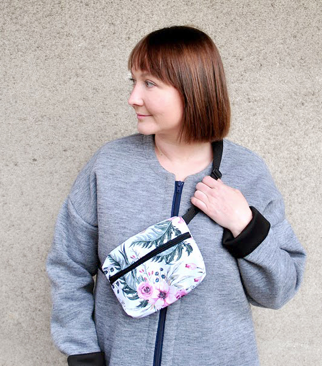

Cześć!
Mam na imię Justyna i miło mi Cię poznać.
Moja przygoda z szyciem zaczęła się już w dzieciństwie. Moja babcia była krawcową i to ona rozwijała we mnie kreatywność i zamiłowanie do rękodzieła. Wiele godzin spędziłam obserwując jak pracuje z burdą, wykrawa materiał, a następnie doszywa ręcznie ozdoby np. do sukien ślubnych. Bardzo miło wspominam czas spędzany z babcią na przymiarkach w zaciszu słonecznej pracowni.
Moja pierwsza maszyna była ręczna, na korbkę, ale nie wystarczała i szybko zamieniłam ją na ciężkiego, metalowego Łucznika Predom. Z początku szyłam „na czuja”, ale szybko przestało mi to wystarczać, a jakość mnie nie zadowalała i zaczęłam długą, często żmudną naukę szycia i konstrukcji.
Przygotowywanie wykrojów sprawia mi mnóstwo radości. Możliwość zabawy z materiałem pozwala łączyć techniczne i artystyczne aspekty mojej wyobraźni. Cenię wysoką jakość wykonania, z zachowaniem technik krawieckim i kreatywne podejście do tematu.
Jestem osobą wierzącą w Boga i staram się działać zgodnie z wartościami z Biblii. Oprócz szycia uwielbiam grać w planszówki, czytać książki i delektować się dobrą kawą. Interesują mnie tematyka zero waste, slow fashion i szafy kapsułowej, zwłaszcza, że ukończyłam studia o kierunku ochrona środowiska.
Uwielbiam uczyć szycia na maszynie i zarażać pasją do rękodzieła. W dzisiejszym zmechanizowanym, skomputeryzowanym świecie umiejętność wykonania czegoś samemu jest wspaniała!
Jeśli masz ochotę rozpocząć przygodę z szyciem chętnie Ci pomogę. Zapoznaj się z ofertą na zajęcia stacjonarne lub online.